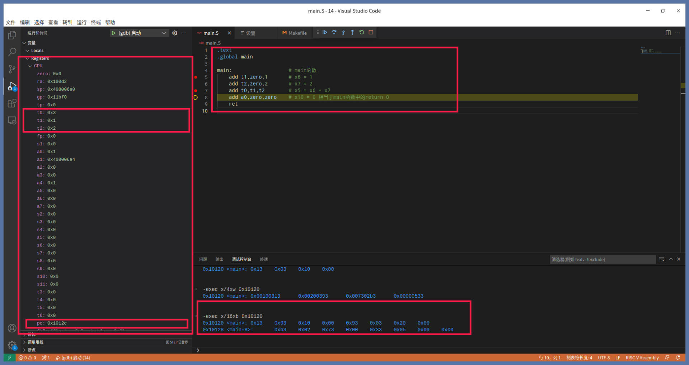
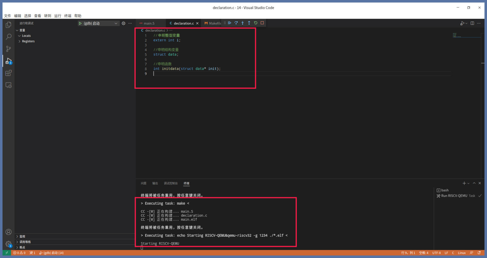
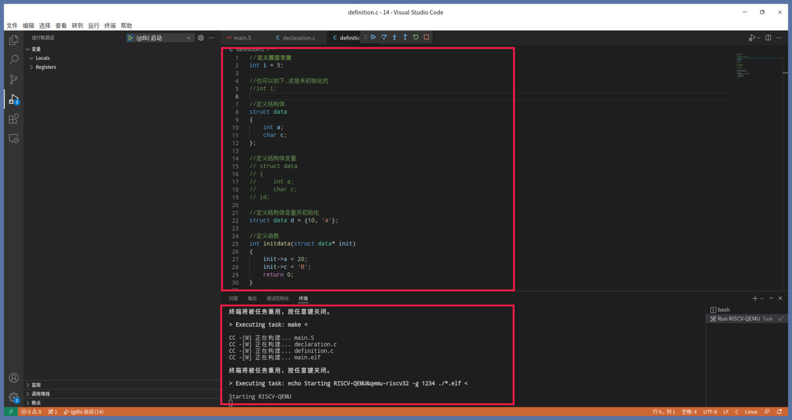
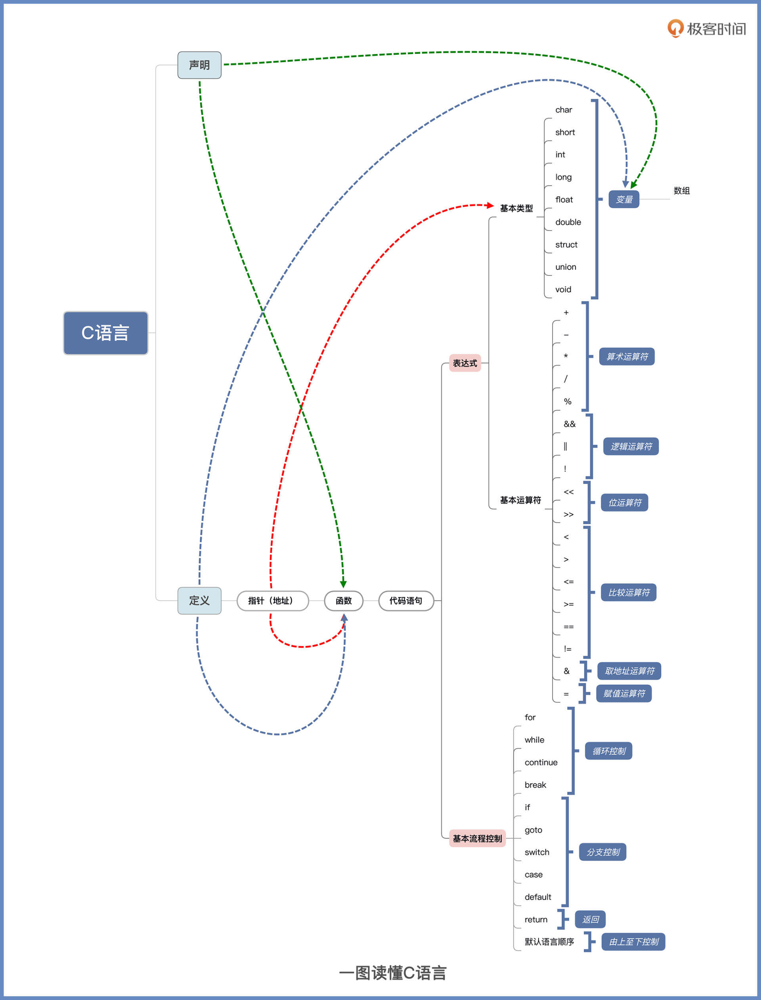
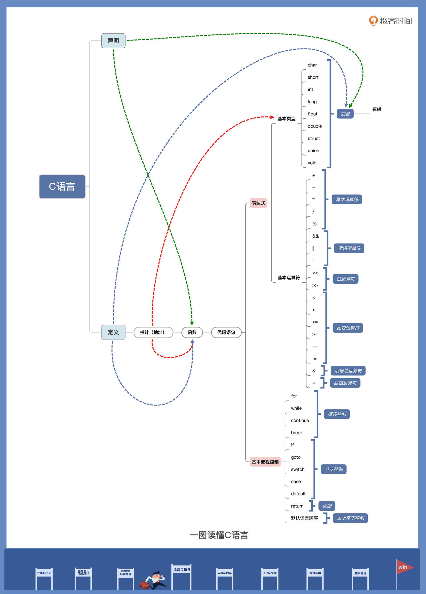

- 00 开篇词 练好基本功，优秀工程师成长第一步.md
- 01 CISC & RISC：从何而来，何至于此.md
- 02 RISC特性与发展：RISC-V凭什么成为“半导体行业的Linux”？.md
- 03 硬件语言筑基（一）：从硬件语言开启手写CPU之旅.md
- 04 硬件语言筑基（二）_ 代码是怎么生成具体电路的？.md
- 05 指令架构：RISC-V在CPU设计上到底有哪些优势？.md
- 06 手写CPU（一）：迷你CPU架构设计与取指令实现.md
- 07 手写CPU（二）：如何实现指令译码模块？.md
- 08 手写CPU（三）：如何实现指令执行模块？.md
- 09 手写CPU（四）：如何实现CPU流水线的访存阶段？.md
- 10 手写CPU（五）：CPU流水线的写回模块如何实现？.md
- 11 手写CPU（六）：如何让我们的CPU跑起来？.md
- 12 QEMU：支持RISC-V的QEMU如何构建？.md
- 13 小试牛刀：跑通RISC-V平台的Hello World程序.md
- 14 走进C语言：高级语言怎样抽象执行逻辑？.md
- 15 C与汇编：揭秘C语言编译器的“搬砖”日常.md
- 16 RISC-V指令精讲（一）：算术指令实现与调试.md
- 17 RISC-V指令精讲（二）：算术指令实现与调试.md
- 18 RISC-V指令精讲（三）：跳转指令实现与调试.md
- 19 RISC-V指令精讲（四）：跳转指令实现与调试.md
- 20 RISC-V指令精讲（五）：原子指令实现与调试.md
- 21 RISC-V指令精讲（六）：加载指令实现与调试.md
- 22 RISC-V指令精讲（七）：访存指令实现与调试.md
- 23 内存地址空间：程序中地址的三种产生方式.md
- 24 虚实结合：虚拟内存和物理内存.md
- 25 堆&栈：堆与栈的区别和应用.md
- 26 延迟分配：提高内存利用率的三种机制.md
- 27 应用内存管理：Linux的应用与内存管理.md
- 28 进程调度：应用为什么能并行执行？.md
- 29 应用间通信（一）：详解Linux进程IPC.md
- 30 应用间通信（二）：详解Linux进程IPC.md
- 31 外设通信：IO Cache与IO调度.md
- 32 IO管理：Linux如何管理多个外设？.md
- 33 lotop与lostat命令：聊聊命令背后的故事与工作原理.md
- 34 文件仓库：初识文件与文件系统.md
- 35 Linux文件系统（一）：Linux如何存放文件？.md
- 36 Linux文件系统（二）：Linux如何存放文件？.md
- 37 浏览器原理（一）：浏览器为什么要用多进程模型？.md
- 38 浏览器原理（二）：浏览器进程通信与网络渲染详解.md
- 39 源码解读：V8 执行 JS 代码的全过程.md
- 40 内功心法（一）：内核和后端通用的设计思想有哪些？.md
- 41 内功心法（二）：内核和后端通用的设计思想有哪些？.md
- 42 性能调优：性能调优工具eBPF和调优方法.md
- 先睹为快：迷你CPU项目效果演示.md
- 加餐01 云计算基础：自己动手搭建一款IAAS虚拟化平台.md
- 加餐02 学习攻略（一）：大数据&云计算，究竟怎么学？.md
- 加餐03 学习攻略（二）：大数据&云计算，究竟怎么学？.md
- 加餐04 谈谈容器云与和CaaS平台.md
- 加餐05 分布式微服务与智能SaaS.md
- 国庆策划01 知识挑战赛：检验一下学习成果吧！.md
- 国庆策划02 来自课代表的学习锦囊.md
- 国庆策划03 揭秘代码优化操作和栈保护机制.md
- 温故知新 思考题参考答案（一）.md
- 用户故事 我是怎样学习Verilog的？.md
- 结束语 心若有所向往，何惧道阻且长.md
14 走进C语言：高级语言怎样抽象执行逻辑？
你好，我是LMOS。
前面我们设计了迷你CPU，相信你已经对CPU如何执行指令有了一定的了解。
而CPU执行的指令，正是由工程师敲出来的高级编程语言产生的，比如我们熟知的C、C++、Java等。
平时我们做编程的时候，底层CPU如何执行指令已经被封装好了，因此你很少会想到把底层和语言编译联系在一起。但从我自己学习各种编程语言的经历看，从这样一个全新视角重新剖析C语言，有助于加深你对它的理解。
这节课我们首先要了解CPU执行指令的过程，然后再来分析C语言的编译过程，掌握C语言的重要组成，最后我们再重点学习C语言如何对程序以及程序中的指令和数据进行抽象，变成更易于人类理解的语言（代码从这里下载）。
CPU执行指令的过程
通过之前的学习，我们已经知道了CPU执行一条特定指令的详细过程，它们是取指、译码，执行、访存、回写。这是一个非常详细的硬件底层细节，我们现在再迈一个台阶，站高一点，从软件逻辑的角度看看CPU执行多条指令的过程。
这个过程描述起来很简单，就是一个循环。为了让你分清每个步骤，我分点列一下：
- 以PC寄存器中值为内存地址A，读取内存地址A中的数据;-
- CPU把内存地址A中的数据作为指令执行，具体执行过程为取指、译码，执行、访存、写回;-
- 将PC寄存器中的值更新为内存地址A+（一条指令占用的字节数）;-
- 回到第一步。
上述过程就是CPU执行指令的逻辑过程。下面我们动手来写几行代码，调试一下，观察一下内存的内容和CPU寄存器的变化，这样你就更加清楚了。代码如下：
.text
.global main
main: # main函数
add t1,zero,1 # x6 = 1
add t2,zero,2 # x7 = 2
add t0,t1,t2 # x5 = x6 + x7
add a0,zero,zero # x10 = 0 相当于main函数中的return 0
ret
这是一段RV32I指令集编写的汇编代码，现在你无法完全理解这段代码也没关系，能看懂注释就行了。
下面我们一起打开我为你们准备工程代码，调试一下。如何用VSCode调试代码，我在环境那节课讲过了，记不清了可以回顾一下。
这里我们用VSCode打开本课的目录，设置好断点，按下“F5”键，就行了，如下所示。

我们看到t0、t1、t2寄存器中的数据和我们预期的一样。PC寄存器从0x10120，一直变化到0x1012c，每执行一条指令PC寄存器的值都要加4，这是因为每条RV32I指令都占用4字节的内存空间。
我们在调试控制台中执行“-exec x/16xb 0x10120”命令，即可显示从0x10120开始的16字节内存数据，刚好4条指令的数据。我还在文稿里画了一幅图，它展示了内存中的情况，如下所示：

对照示意图，我来为你解释一下，大致逻辑是这样的：最开始，由CPU控制单元通过控制总线发出要读取数据的控制信号。；接着通过地址总线发送地址信号（当前情况下地址数据来源PC寄存器（0x10120））；然后通过数据总线传送指令数据(0x00100313)；最后执行单元拿到指令数据开始执行，并增加PC寄存器使之指向下一条指令。重复这个过程，内存中的指令就能一条一条地执行了。
C语言编译过程
了解了CPU执行逻辑过程之后，我们再来看看内存中的指令数据是如何产生的。
其实数据产生的方式有很多，我们可以用手写，也可以用电子编程器。只不过这样的方式，太古老了，也太低效了，更加容易出错。所以人们之后设计汇编语言时，实现了指令符号化，这看似高级了不少，但是依然是低效且难以理解的。
直到后来人们开发出了高级语言，进一步抽象，形成更容易让人们理解的形式。但是因为CPU始终只认识那些二进制数据，就需要把高级语言转化成为二进制数据，这个转化的过程叫编译过程，完成这个转化的工具软件就叫编译器。
比如下面要讲的C语言编译器编译C语言的过程。我们先通过示意图来理解这一过程，建立一个整体印象，如下所示：

现代的C预处理器、C编译器、汇编器、链接器是独立的程序，可以分开独立工作，并不是一个程序完成上图中所有的工作。
因为我们不开发编译器，这里你不需要理解词法、语法是如何分析的，中间代码是怎样优化的。我们要关注的焦点是，从C源代码到二进制机器指令数据的转化过程。
C语言的重要组成
想要弄清楚C如何跟二进制指令数据转化，首先要清楚C语言的重要组成部分。你可能会说，C语言的重要组成当然是C语言代码。这个说法当然没错，但代码只是一个统称。从不同层次抽象，里面的内容是不一样的：从高层次看代码中只有声明和定义，下一层看代码只有函数和变量，变量进一步分解还有不同的类型。
硬背这些分类只会让你晕头转向。接下来我们不妨分析一下，想要让一段C语言代码编译通过，需要哪些重要成分和逻辑结构。
我们在C语言中经常容易混淆声明和定义这两个概念，我们先来看看声明。
声明是给变量、函数、结构体等命名，表明在程序代码中有该变量、函数、结构体，我们来看看下图中的代码：

我们在declaration.c程序文件中，声明了一个整型变量，一个结构体变量，一个函数。然后我们编译它，确实能编译成功，这说明在C语言文法中仅仅需要有声明就可以，当然空文件也是可以的。声明不会分配内存空间。
这里需要注意的是，只有声明的代码确实能编译成功，但链接的时候就不一定了，我们这里之所以能链接成功。是因为在其它代码中没有对这些声明进行了引用。
下面我们来看看定义，定义是具体给变量分配内存空间。这个内存空间可以是初始化的，也可以是没有初始化的、给出具体函数的实现。
具体函数可以是空函数，函数中没有语句什么都不做也可以，唯一必需的就是指明结构体成员。结构体也是变量，只不过结构体是多个变量的组合，同样要分配内存空间，可以初始化也可以不做初始化。
我们写代码验证一下对不对，如下图所示：

我们还是在definition.c程序文件中，定义了一个整型变量，一个结构体变量，一个函数。我们同样能成功编译它。这说明C语言文法中没有声明，只有定义也可以成功编译的，其实C语言文法的原则是，声明可以出现很多次，定义有且只能出现一次。声明和定义也可以同时出现。
现在我来总结一下，其实编译的其中一个过程，就是用某种编程语言的文法来检查所写语言（代码）是否正确。你可以这么理解，语言的文法就是对这种语言的最高抽象，所以我们可以说 C语言最重要的组成部分就是声明或者定义。
声明或者定义中又包含变量和函数，变量又有指针、数组、结构体，它们又包含各种类型，而函数中包含了各种表达式，各种表达式对变量进行操作。
编译器的语法分析过程，就是这样层层递归推导下去，最终构建出语法树，从而检查语言是否正确无误、是否符合该语言文法的规则定义，都符合编译才能通过。就像你学英文一样，你怎么判断一条英语句子是否正确呢？你会拿主谓宾等等约定俗成的语法去套，如果能套上去，就是正确的。
C语言对程序的抽象
前面我们已经从整体上了解了C语言的重要组成，可以看出，一段程序从语法角度来说就是声明加上定义。
现在我们继续深入了解C语言对程序的抽象，平时我们最多是使用设计好的C语言。而现在我们要站在C语言设计者的角度想一想，一门既能写程序，又更容易让人类理解的语言要怎么设计？其实这门语言的“设计过程”，就是C语言对机器语言的抽象，也就是C语言对程序的抽象。
我特意为你绘制了一幅图，我们从C语言的核心语言元素开始了解。这些元素就像英文里的各种固定词型，知道了这些元素在C语言中发挥的作用，你就找到了理解C语言的钥匙。

我们看到C语言中，包含声明和定义，可以声明变量和函数，由图中绿色箭头指向。也可以定义变量和函数，由图中蓝色箭头指向，注意定义只能出现一次，声明可以出现多次。
我故意安排指针在最前端，是因为从C语言特性讲，指针能指向任一变量和函数，由图中红色箭头指向；从另一个角度看，指针就是内存，能自由寻址读写内存空间，但能否读写内存则要看操作系统给的权限，指针就是C语言中的“上帝之手”。同时，图中黑色线条还表示指针可以有相应的类型，并且能参与运算，这是我把指针放在比函数更高位置的原因。
需要注意的是，各种类型的变量是可以定义在函数以外的，这些定义在函数以外的变量是全局变量，而定义在函数内部的变量叫局部变量。
如果我们要用C语言完成一个实际功能，一定要写一个函数。函数就是C语言中对一段功能代码的抽象。一个函数就是一个执行过程，有输入参数也有返回结果（根据需要可有可无），代码如下所示：
void func()
{
return;
}
上面代码中的函数是空函数，C语言是允许的，当然这样的函数不会完成任何功能。
如果我们要完成点什么功能，就要在函数中写代码语句。代码语句又被抽象成表达式和流程控制。这也是为什么上图中函数下面包含了表达式和流程控制。
接下来，我们写个完成求两数之差、求两数之和的函数，代码如下所示：
int func(int op, int a, int b)
{
if(op < 1) //表达式：op < 1
{
return a - b;//表达式：a - b
}
return a + b;//表达式：a + b
}
上面代码中有三个表达式，注释中已经写明了，含有三种流程控制：if判断分支控制，return返回控制，还有默认的从上至下的代码顺序。你可以把上述代码拿到上图中去套，以证明C语言对代码语句的抽象，你会发现一套一个准。
下面我们继续研究一下表达式。从前面的图里，可以看到C语言表达式包含了变量和运算符。
变量又有各种类型，单个变量也是表达式，但是运算符不能单独存在变成表达式，所以C语言表达式要么是单个变量，要么是变量加运算符一起。根据运算符的类型不同，可以分成运算表达式、逻辑表达式、赋值表达式等。
下面我们使用代码实例来找找感觉，如下所示：
int sumdata = 0;//全局整型变量sumdata
void func()
{
int i = 1;//局部整型变量i
int *p; //局部整型指针变量p
p = &sumdata;//把sumdata变量的地址赋值给p变量，从而指向sumdata变量
while(1)//循环流程控制
{
if(i > 100)
{
break;//跳出循环，流程控制
}
(*p) += i;//相当于sumdata = sumdata + i
i = i + 1;
}
return;
}
上述代码所有的表达式中，涉及了一个全局变量，两个局部变量。其中局部变量中有一个是指针变量，指向全局的变量。包含了更多的流程控制语句，可以明显地看到表达式就是：变量和运算符组合在一起，完成了对变量的操作。而变量代表了数据，最终就能实现对数据的运算。但是变量有各种类型，这些类型只是规范了变量的位宽和大小，下一节我们会有更详细的介绍。
现在我们就可以总结一下，C语言是如何抽象程序的，如下表所示。

这就是C语言对程序的抽象。到这里，今天的课程也到了尾声，你是否像我一样，想起了那个著名的公式：程序=算法+数据结构？
没错，C 语言就是函数 + 变量。函数表示算法操作，变量存放数据，即数据结构，合起来就是程序 = 算法 + 数据结构。
C语法的运算符和流程控制可以实现各种算法，而各种类型的变量组合起来，就能实现各种复杂的数据结构。理解了这些，你就抓住了C语言的本质，也为后续学习打下了良好的基础。
重点回顾
到这里今天的课程就告一段落了，我来总结一下这节课的重点。
首先我们研究了CPU执行指令过程和C语言编译过程。理解了这两个过程，后续的学习就有了良好基础。
接着我们进入到C语言内部，从宏观上理解了定义和声明这两个C语言的重要组成部分。声明只是一种说明性质的东西，不产生机器指令，而定义则是实现，会产生对应的机器指令。
最后我们从C语言的核心语言元素入手，抽丝剥茧，层层解构。C语言由函数构成，函数中又包含多条语句，语句由流程控制和表达式构成，表达式由各种类型的变量和各种运算符构成。这些东西组合在一起，就把机器执行的程序抽象成了人类易于掌握和理解的概念——C语言。文稿里我总结的那张图，你不妨保存下来，作为你学习理解C语言的导航图。

下节课我们继续研究C语言和汇编语言的对应关系，敬请期待。
思考题
为什么C语言中为什么要有流程控制？
期待你在留言区踊跃发言，积极思考有助于你更好地领会课程内容。也推荐你把这节课分享给身边的朋友，说不定就能让他进一步掌握C语言了。
© 2019 - 2023 Liangliang Lee. Powered by Vert.x and hexo-theme-book.